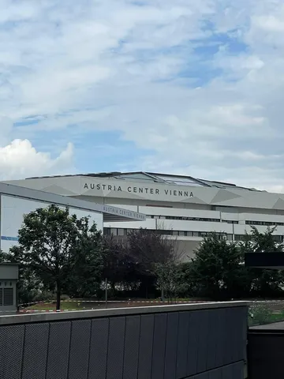
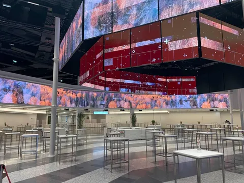
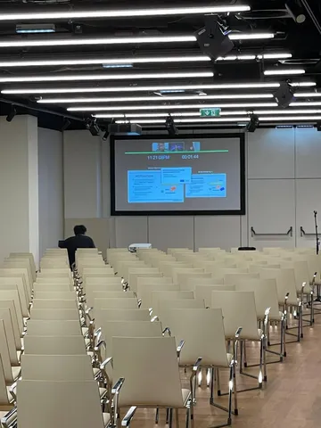
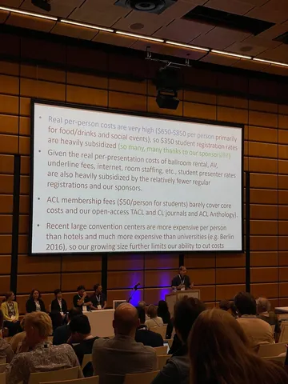
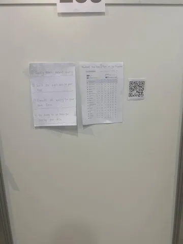

Продолжаем рассказывать, что увидели и услышали на конференции: листайте фото и видео!
В этом году ACL состоялась в Austria Center Vienna — конференц-зале в центре Вены. Красиво не только внутри, но и снаружи. Иногда на докладах людно, иногда — не очень.
Поразило невероятное количество постеров: около 250 только в одном зале. Работы очень разные, от «денег нет, но вы держитесь» до лаконичных постеров на А4. Мы выбрали для вас самые интересные из них — о трендах и статьях читайте в Душном NLP:
В Вене проходит 63-я ежегодная конференция ассоциации компьютерной лингвистики — ACL 2025
Интересное с конференции ACL 2025
Кадры для вас сделали и отобрали
#YaACL25
ML Underhood




